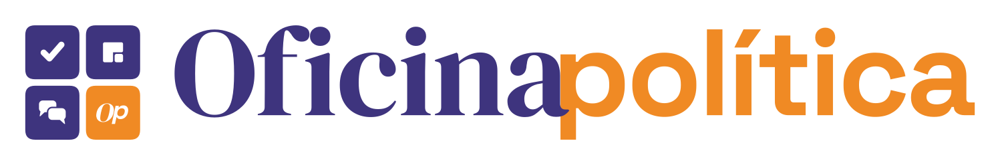

Opcional · Fique por dentro
Deixe seu contato para ser avisado quando sair a análise pós-eleição, os cards de novas cidades e o lançamento das ferramentas da Oficina Política para quem faz política.
Avisamos você por e-mail e WhatsApp quando sair a análise pós-eleição, novos cards e o lançamento das ferramentas.